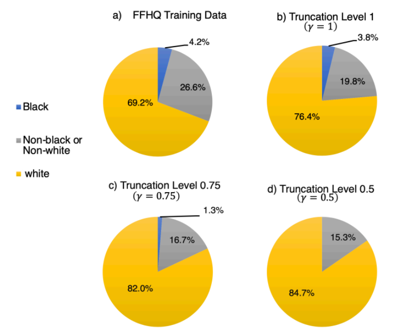
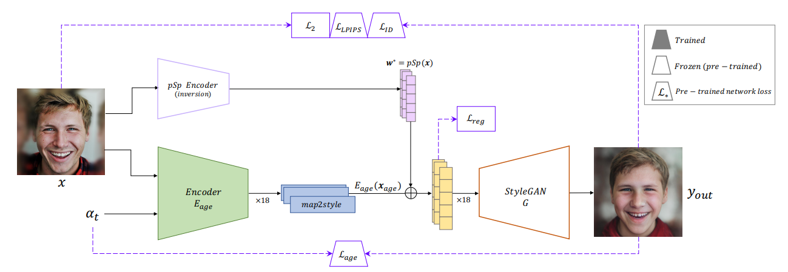
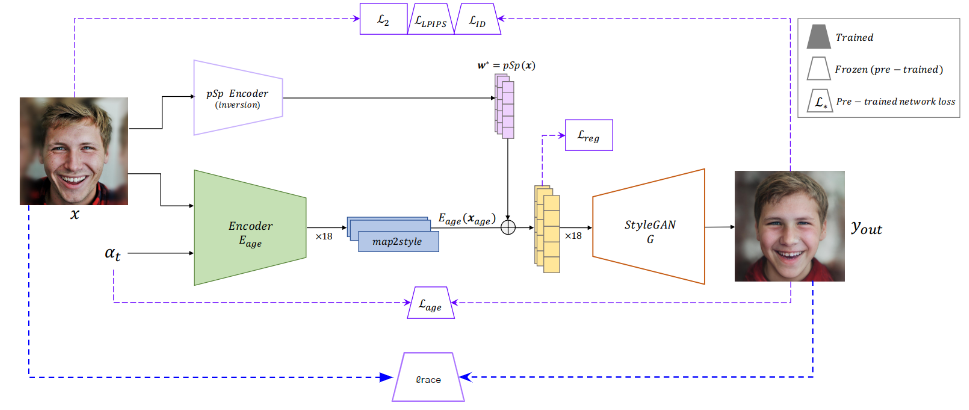

Facial age progression models predict how someone may look as they age. Many are trained on datasets that do not represent the population well. FFHQ, for example, is heavily skewed toward white faces.

The racial distribution in the popular FFHQ dataset. Truncation, a common technique in GANs, further amplifies this bias, increasing the ratio of generated white faces.
Models trained on this data may change the perceived race of non-white subjects as they age. We wanted to reduce that failure.
Baseline: Style-Based Age Manipulation
We started with Style-based Age Manipulation (SAM), an image-to-image model built on StyleGAN. SAM encodes a face into a latent representation, changes its age, and tries to preserve the person's identity.

The baseline SAM architecture, which maps an input image and a target age to a set of style vectors to generate the aged face.
Adding a Race-Preservation Loss
We added a penalty when the generated face's predicted race differed from the input. A pretrained DeepFace classifier supplied that signal during training.
DeepFace compared the original and generated faces after each SAM pass. A mismatch contributed a race-preservation loss alongside the existing identity and age objectives.

Our proposed architecture. We add a DeepFace classifier that compares the input and output images, calculating a "race loss" to guide the model towards fairer results.
Results
We did not yet have complete quantitative metrics, so these results are qualitative. The video compares the baseline and modified models directly.
First half: baseline. Second half: our model. Our model better preserves the subject's perceived race, while the baseline often shifts toward white features.
Side-by-Side Image Comparisons
We also compared still images from our model, trained from scratch with a race-loss weight of 15, against the original SAM.
Young Age
Comparison at a younger age. Our model (left) vs. the baseline model (right).
Mature Age
Comparison at a mature age. Our model retains racial characteristics more faithfully.
Elderly Age
Comparison at an elderly age. The baseline model shows a significant shift in features.
What We Learned
Adding a classifier signal directly to the loss reduced this bias without requiring a perfectly balanced training set. Compute limits kept the evaluation preliminary, but two points stood out:
Training from scratch mattered: Fine-tuning the biased baseline did not work. The preservation objective had to be present from the start.
The loss could cover other attributes: A similar setup could target gender, expression, or emotion, though each would need careful evaluation.
Try It Yourself: Notebooks
These Colab notebooks run the model without local setup.